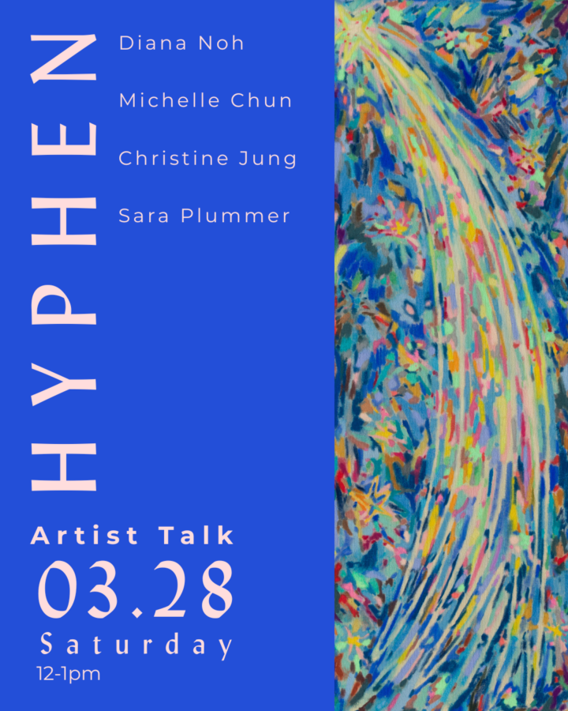

Hyphen- Artist Talk
Join us for the artist of our latest exhibition, “Hyphen!”
A hyphen is, at once, a device that connects two different worlds and a sign that indicates their separation. Like a door or a horizon, the hyphen is a place where indefiniteness and in-betweenness hold animating possibilities that can assemble multiple singularities, connect opposites for expansion, and establish a visual boundary between identities. Temporarily holding things together, the hyphen adds and subtracts the will and wishfulness of the user. It is a place of aspiration, longing, and negation. Though the space is liminal, it is not inactive nor passive. The hyphen does not just lie flat, it dashes to and fro, constantly rending and repairing.
The show, Hyphen, is a field that explores meanings affected by deconstructing and reconstructing images and narratives. Through different mediums—such as paper, paint, and clay—this show collectively inspects the common grounds of fragmentation, in-betweens and contradictions. Each artist in this show has visceral experiences of living in (or as) a “hyphen” either through clashing cultural contexts, migrant diaspora, or straddling two languages. As a result, each artist is interested in sensory and conceptual thresholds that often do not posit a static answer.
Just as the hyphen can simultaneously construct and dismember definitions and realities, the participating artists practice ways of disassembling and assembling to manifest a collection of specific aims. Through this common material syntax of deconstruction and reconstruction, each artist excavates their own intimate, felt distortions through the stitching of photographs, the assembly of impossible cultural landscapes through paint, meditation upon an unyielding feeling through clay, and the re-constellation of time through paper and stone.
The artists collectively present Hyphen as a thread constructing hybrid conversations within and between the individual artists, their works, and the audience. Through two-dimensional and three-dimensional objects and images, Hyphen invites the viewer to move within and about the apertures of each work—a movement that inevitably weaves and interrupts the space between the objects, ultimately positioning the viewer as a hyphen. artwork on flyer: Silent Wish by Michelle Chun*
Artists: Diana Noh, Michelle Chun, Christine Jung, Sarah Plummer *artwork in flyer original orientation is horizontal with star to the left-bottom corner.